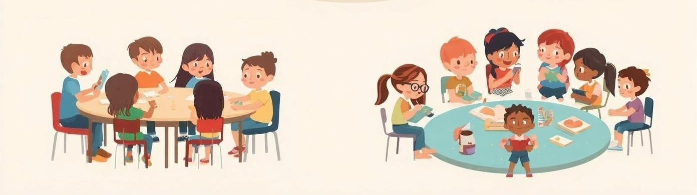
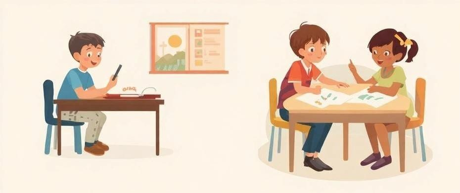
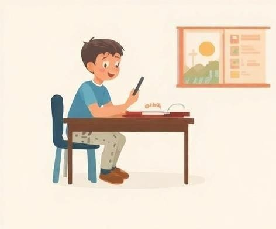
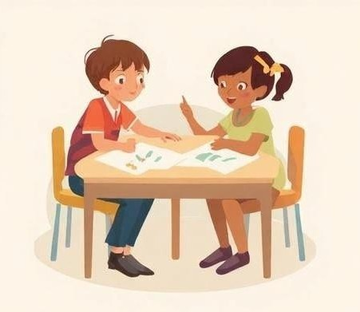
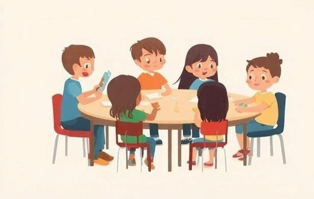
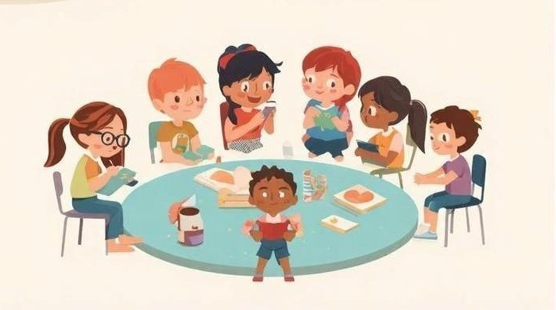

Contexto.
Etapa
Primaria
Curso
6º
Alumnos
16
Primaria
6º
16
La SdA está diseñada para el área de Inglés como lengua extranjera, aunque tendremos en cuenta la vinculación con otras áreas como Science y Arts (programa Hable).
De acuerdo a los principios del DUA, es aconsejable emplear una variedad de formas de agrupamiento en el aula.
En función de cada sesión o actividad, se organizan distintos tipos de agrupaciones del alumnado. Estas se determinan atendiendo a las características de la tarea, los contenidos a trabajar, las particularidades del grupo y, especialmente, a las posibilidades que ofrece el espacio del aula. En cuanto a la organización espacial, el aula de referencia es amplia, lo que facilita adaptar la disposición con flexibilidad: trabajo individual en filas, en parejas, en pequeños grupos de 4 o 5 alumnos y alumnas, o en gran grupo con disposición en forma de herradura.



IndividualEl agrupamiento individual se utiliza cuando se pretende que cada alumno o alumna trabaje de manera autónoma, favoreciendo la concentración, la responsabilidad personal y el ritmo propio de aprendizaje. Es especialmente adecuado para actividades de reflexión, evaluación, práctica de destrezas específicas o tareas que requieren atención individualizada, permitiendo además al docente observar el progreso y las necesidades de cada estudiante de forma más precisa.

ParejasEl agrupamiento en parejas se emplea cuando se busca fomentar la interacción, la colaboración y el aprendizaje entre iguales. Resulta especialmente útil para actividades de diálogo, resolución conjunta de tareas, práctica oral o corrección mutua, ya que permite que el alumnado se apoye, comparta ideas y construya el conocimiento de forma cooperativa en un entorno más cercano y participativo.

Pequeño grupoEl agrupamiento en pequeños grupos de 4 o 5 alumnos se utiliza cuando se pretende fomentar el aprendizaje cooperativo, la participación activa y el desarrollo de habilidades sociales. Es especialmente adecuado para la realización de proyectos, resolución de problemas o actividades en las que se requiere intercambio de ideas, reparto de roles y toma de decisiones conjunta, favoreciendo que todos los miembros del grupo contribuyan y aprendan de forma compartida.

Gran grupoEl agrupamiento en gran grupo se utiliza cuando se pretende trabajar con toda la clase de forma conjunta, facilitando la transmisión de información, la puesta en común de ideas o la realización de actividades colectivas. Es especialmente adecuado para explicaciones, debates, asambleas o introducción de nuevos contenidos, ya que permite al docente guiar el aprendizaje y asegurar que todo el alumnado recibe las mismas orientaciones al mismo tiempo.
La presente situación de aprendizaje se desarrollará a lo largo de 8 sesiones, entre el 27 de abril y el 8 de mayo de 2026.
Analizar la ciudad en la que vivimos y debatir sobre su influencia en nuestro modo de vida. Completar a continuación una ficha interactiva.
Trabajamos en parejas: recopilación de imágenes e información sobre nuestra ciudad, las actividades que ofrece y posibles medidas que podemos tomar para mejorar su sostenibilidad.
Trabajamos en pequeños grupos de 4 o 5 alumnos para proceder a la puesta en común de la información obtenida hasta el momento y realizar una presentación/infografía, por ejemplo un folleto informativo.
Exposición oral de las presentaciones preparadas al resto de grupos. Coevaluacion y autoevaluación
Trabajo individual: descripción de nuestra ciudad y de cómo nuestros hábitos pueden contribuir a cuidarla y cuales no son aconsejables
Trabajo individual: cuestionario para evaluar. Elaboración en pequeños grupos de breve entrevista para la siguiente sesión.
Gracias a la multiculturalidad de nuestro centro, hemos organizado una charla con varias familias inmigrantes para conocer su experiencia al trasladarse a nuestro país o ciudad. Además contamos también entre los invitados a la charla con nuestro auxiliar de conversación que es de Estados Unidos. Al terminar su presentación, el alumnado preparará unas cuestiones sencillas para hacerles una pequeña entrevista.
Realización de un "Podcast" en grupos, que recoja parte dela información que hemos recogido en la sesión anterior.
Libreta
Obra publicada con Licencia Creative Commons Reconocimiento Compartir igual 4.0